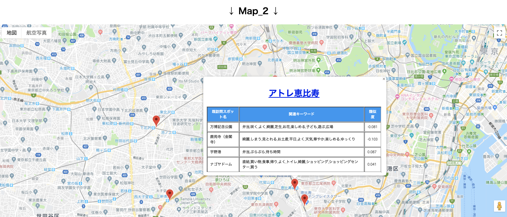

出力説明
「実験開始」をクリックしたあと，Map_1とMap_2が表示されます．
Map_1についての説明
Map_1の表示図は以下になります．

赤ピン：未訪問エリア内のスポット
黒ピン：入力された既訪問スポット
カラーマップ：
カラーマップは赤ピンと黒ピンの類似度（似ている度合い）を示しています．
青色に近づくと既訪問スポットと未訪問スポットの関連性が低いと意味しています．
赤色に近づくと既訪問スポットと未訪問スポットの関連性が高いと意味しています．
操作方法：
赤ピンをクリックした後で黒ピンをクリックして詳細情報を確認してください．
黒ピンが表示される詳細情報は，未訪問スポット名，既訪問スポット名，関連キーワードです．
Map_2についての説明
Map_2の表示図は以下になります．
赤ピン：未訪問エリア内のスポット
操作方法：
赤ピンをクリックすると詳細情報が表示されます．
詳細情報は，未訪問スポット名とそれに関連する既訪問スポット名，関連キーワード，類似度です．
類似度（似ている度合い）の値は「-1~1」の間になります．
「-1」に近づくと既訪問スポットと未訪問スポットの関連性が低いと意味しています．
「1」に近づくと既訪問スポットと未訪問スポットの関連性が高いと意味しています．